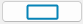
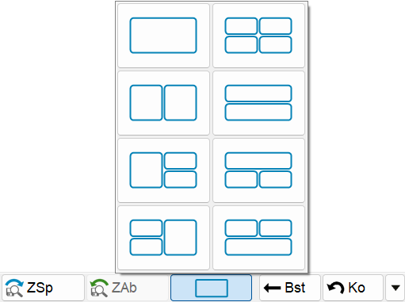
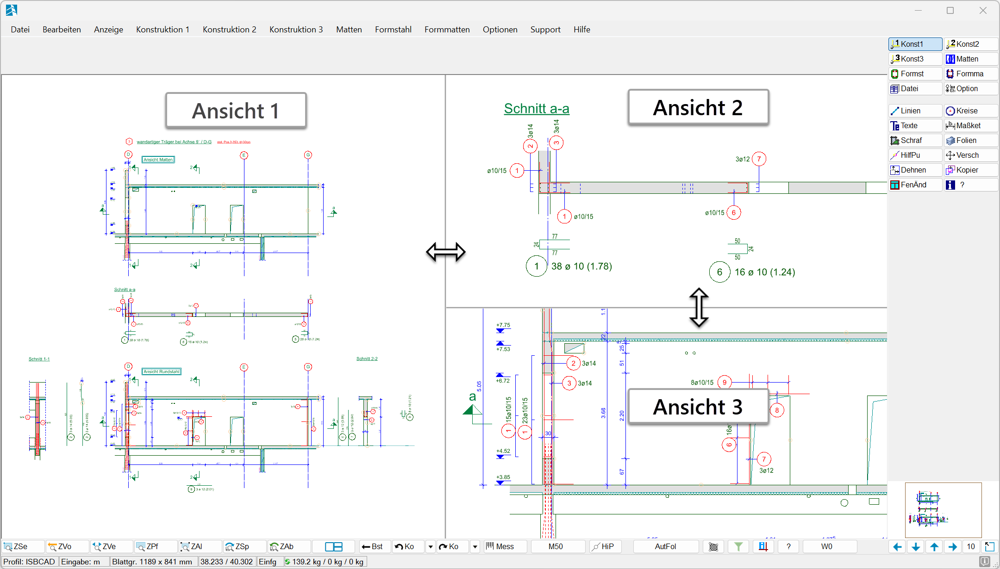

Die Zeichenfläche kann in bis zu vier gleichzeitig sichtbare Zeichnungsansichten unterteilt werden. Jede Ansicht zeigt einen frei definierbaren Ausschnitt derselben Zeichnung. So lassen sich bei großen Plänen verschiedene Teilbereiche für eine bessere Übersicht beim Konstruieren nebeneinander oder übereinander darstellen. Änderungen, die Sie in einer Ansicht vornehmen, werden gleichzeitig in allen anderen Ansichten reflektiert, sofern sie sich auf diese auswirken. Sobald Sie ein Layout gewählt haben, können Sie parallel in den Ansichten arbeiten.
Vorbemerkungen:
·Die Zoom- und Verschiebefunktionen können in jeder Ansicht genutzt werden.
·Im erweiterten Übersichtsfenster gespeicherte Zoomausschnitte werden in der Ansicht abgerufen, in der die letzte Aktion stattgefunden hat (Klick, Mausrad-Zoom usw.).
·Das Layout gilt für die aktuelle Instanz und wird nicht mit der Zeichnung gespeichert.
Zeichenfläche teilen
§Öffnen Sie die Layout-Optionen in der unteren Menüleiste, indem Sie die Schaltfläche anklicken.
§Wählen Sie anschließend per Mausklick das gewünschte Layout.
 |
§Passen Sie nun die verschiedenen Ansichten an, indem Sie die Bildschirminhalte heran- oder herauszoomen oder verschieben.
§Durch das Ziehen einer Trennlinie mit der Maus können Sie den Bildschirmanteil der Ansichten ändern.
 |
§Sie können jederzeit das Layout wechseln. Die Zoomausschnitte müssen dann aber neu gesetzt werden.
Siehe auch: